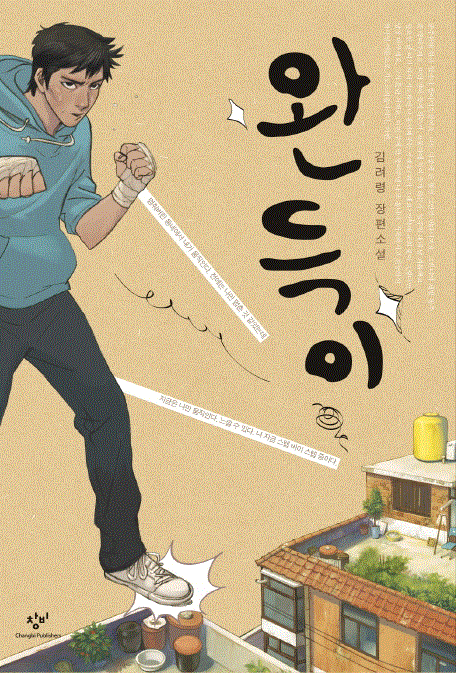
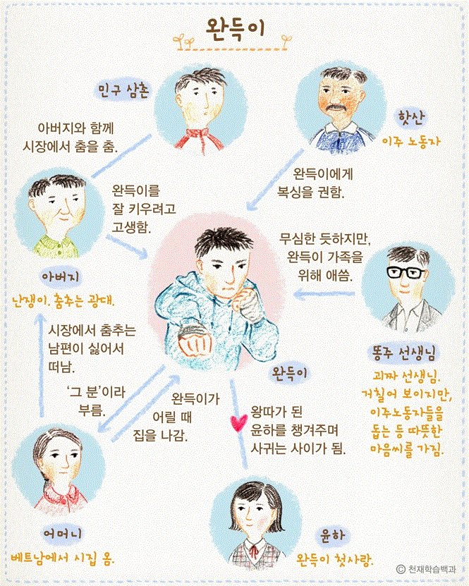

안녕하세요! 저는 건국대에 재학중인 남권표입니다!
저는 은평구에 살고있고 학창시절동안 이 동네를 벗어나본 적이 없어요.
그래서인지 건국대에 처음 입학했을 때는 조금 어색하더라구요 ㅎㅎ.
하지만 점점 익숙해지면서 친구들도 사귀고, 동아리도 들면서 나만의 취미 생활도
만들게 됐어요. 취미 생활은 베드민턴, 음악 듣기이고, 팝송을 좋아해요.
그중에서도 Justin Bieber의 노래를 많이 듣는 편이에요. 좋은 팝송을 추천해 주는건 언제든 환영입니다!
1. 너는 뭘 좋아해?
나는 노래! 노래를 들으면 마음이 편해지고 부를 때는 그만큼 스트레스를 풀어주는 것도 없거든.
2. 그러면 앞으로의 진로는 음악과 관련이 있어?
아니! 음악이 좋긴 하지만 그만한 재능이 있는 것 같지는 않아. 근데 고등학교 때부터 알파고, 스마트폰 등을 보면서 기계들이 어떻게 작동되는지 관심이 생겼고, 자연스럽게 컴퓨터에 관심이 갔지. 그래서 진로는 음악보다는 컴퓨터와 관련이 있을 것 같아!
3. 컴퓨터 관련 학과는 과제가 많다고 들었는데 힘들지는 않아?
아직 내가 많이 부족해서 힘든 부분이 많긴 해. 그래서 밤도 많이 새고 있지. 하지만 고생 끝에 결과물을 완성했을 때의 기분은 말로 표현할 수 없어. 그 기쁨과 성취감들이 지금의 힘든 일들을 버틸 수 있게 해주는 것 같아.
4. 현재 어떤 부분에서 너가 많이 부족함을 느껴?
평소 웹프로그래밍, 객체지향프로그래밍 등 여러 강의의 실습들을 수행하면서 이렇게 하는 게 맞나? 하는 불안감이 들 때가 있어. 이런 불안감이 내 부족한 실력에서 비롯된다고 생각해.
5. 그럼 그런 부족함을 보완하기 위해 하고있는게 있어?
부족한 부분들은 1학년때 부터 느꼈기 때문에 건국대에서 주최하는 'Learning & Sharing'활동에 참여하면서 스터디 그룹을 만들어 공부하는 중이야. 서로 부족한 부분들을 알려 주는게 많은 도움이 되는것 같아.
6. 최근에 코로나 때문에 스터디 활동을 하기에는 힘들지 않아? 스터디 활동에 힘든 점은 없어?
코로나 때문에 만나기에는 어려움이 있지. 그래서 zoom을 이용해서 화상으로 스터디를 하는 중이야! 매주 토요일마다 꾸준히 활동하고 있어.
7. 그럼 이 활동 이후에는 어떤 것을 통해서 부족함을 보안할 계획이야?
이 활동이 1학기 종강 이후에 마무리가 되고, 이후에는 친구들과 같이 공모전에 참가해볼 생각이야. 많은 프로젝트에 참여하면서 직접 부딪혀 보는 것이 가장 좋은 방법이라고 생각해.
8. 컴퓨터 공학과를 졸업하고 생각하고 있는 진로가 어디야?
아직 명확하게 결정은 못 내렸지만 금융 쪽과 관련된 일들을 알아보는 중이야. 아빠가 그쪽 분야의 업무를 하시거든. 내 롤 모델이 아빠라 나도 그런 직종으로 가고 싶다는 생각을 많이 해.
9. 아빠가 롤모델이 된 계기가 있어?
어렸을 때 아빠 회사에 가본적이 있는데 그때 아빠 모습이 평소에 집에서 보는 아빠와는 다르게 굉장히 멋있었어. 집에서는 많이 편하고 잘 웃는 좋은 아버지였는데 밖에서의 철저하고 진지한 모습이 멋있었던 것 같아. 그래서 나중에 아빠같은 사람이 되고 싶다는 생각을 하기 시작했지. 그러다보니 자연스럽게 아빠가 롤모델이 되어간 것 같아.
10. 아버지가 좋은 분인가봐. 가족 분위기가 좋은 편이야?
응. 내 로고가 있어. 아빠처럼 살고 엄마 같은 부인을 얻자. 부모님이 항상 긍정적이셔서 나하고 형도 평소에 많이 밝은 편이야. 학창시절에는 너무 많이 웃어서 애들이 내 웃음소리를 따라 한 적도 많아. 많이 웃으니 가족 분위기도 자연스럽게 좋아지는 것 같아. 이런 가족이 나는 너무 좋은 것 같아.
11. 그럼 가족끼리 트러블이 생길때는 없어?
물론 있지! 하지만 그런 상황이 발생할 때마다 서로 대화를 통해서 원만히 풀어나가고 있어. 그 상황 화난다고 대화를 차단하면 결국 안 좋은 결과만 나오게 되더라고. 그래서 항상 이성적으로 차분하게 서로의 입장을 얘기하고 풀어나가는 방향으로 문제를 해결해!
12. 아까 삶의 로고에 대해서 언급을 했는데, 혹시 삶의 가치관 같은게 있어?
음 아직 가치관이라는 게 확실히 정립된 거 같지는 않아. 그래도 내가 힘들 때는 '오늘이 없는 사람한테 내일은 없다'라는 말을 되새기면서 마음을 다 잡곤 해.
13. 아버지말고 다른 롤모델은 없어?
내 두 번째 롤 모델은 '엘런 튜링'이야. 컴퓨터에 관심이 생기고 처음 접한 사람이 엘런 튜링에 관한 이야기였거든. 애플사의 회사 로고가 그와 관련 있단 사실이 놀라웠고 그 이야기가 흥미로워서 엘런 튜링에 대해 알아보기 시작했어. 이를 통해 그가 컴퓨터 분야에서 이룬 위대한 업적들을 알게 되었고 그를 존경하게 됐지.
14. 취미는 뭐야?
취미는 베드민턴하고 노래 듣기야. 노래는 팝송류를 좋아해.
15. 취미 활동으로 뭔가 얻은게 있어?
중학교 때 바로 옆 고등학교인 고등학교에서 배드민턴 대회를 열었어. 중학생과 선생님이 팀을 이루고 복식 룰로 진행하는 대회였어. 소규모 대회였지만 거기서 3등을 하고 상품을 받았지. 이때 '나도 뭔가를 할 수 있구나!'라는 생각을 할 수 있었고 자신감이 올랐던 것 같아. 그리고 노래는 중학교, 고등학교 때 장기 자랑에는 빠지지 않고 참여했었어. 이 덕분에 남들 앞에서 발표를 하거나 무언가를 할 때 떨지 않고 더 잘할 수 있게 된 것 같아.
16. 팝송 말고 좋아하는 노래 장르는 없어?
국내 노래는 아이돌 노래를 제외하고는 거의 다 좋아해. 최근 국내 노래에서 '흔들리는 꽃들 속에서 네 샴푸향이 느껴진거야'를 가장 좋아해. 팝송이든 국내 노래든 들으면 마음이 편해지는 음악들을 좋아해. 좋은 노래가 있으면 나한테도 말해줘!
17. 노래를 잘하는 것 같은데 노래 대회는 참가해봤어?
고등학교 때 음악 경영 대회로 매년 여는 행사가 있었어. 그때 2등을 해서 은상을 타고 학교 축제에서 공연까지 했지.
18. 요즘은 어떻게 취미 활동을 해?
요즘은 코로나 덕분에 베드민턴을 칠 수가 없어. 하지만 노래는 계속듣고 유튜브 mr로 연습도 꾸준히 하고있어. 학교에 나갈 수 있게 되면 워너라는 동아리도 들어서 취미 생활과 학업을 같이 병행할 계획이야.
19. 코로나 때문에 답답하겠네. 요즘 힘든 점은 없어?
코로나 덕분에 집에만 있는게 너무 답답해. 또 과제도 전에 비해서 점점 많아지는 것 같아. 예전에 평범했던 일상이 얼마나 소중한지 다시 한번 느끼게 돼. 하지만 나보다 더 힘든 분들이 많으니까 이겨내야 한다고 생각해!
20. 마지막으로 하고 싶은 말 있어?
요즘 시국에 다들 힘들텐데 다들 화이팅하고 건강관리 잘하세요!

제목: 완득이
지은이: 김려령
누군가가 나에게 '가장 재미있게 읽었던 책은 뭐니?'라고 묻는다면 가장 먼저 '완득이'가 떠오른다. 완득이는 김려령 작가가 쓴 장편소설로 완득이가 똥주 선생님과 가족, 이웃들에게 마음을 열고 성장해가는 모습을 보여주는 소설이다.
이 책을 읽게 된 것은 형의 추천 때문이었다. 평소 책을 잘 읽지 않는 형이 책을 추천해줄 정도면 충분히 읽어 볼 가치가 있다고 생각했다. 때문에 이 책을 읽게 되었고 너무 재미있어서 영화로 상영된 '완득이'까지 보게 되었다.
중학생때 읽은 이 책이 아직까지 기억에 남는 이유는 어쩌면 완득이의 모습에서 내 모습이 보였기 때문이라고 생각한다. 아무런 꿈도 없이, 아무런 목표없이 살고 있었던 내 모습이 방황하던 완득이의 모습과 비슷한 듯했다. 하지만 소설 끝에서 완득이는 달랐다. 방황하던 완득이는 킥복싱을 하며 인생의 목표를 가졌다. 또 다른 사람과의 소통을 거부하던 완득이가 마음의 문을 열며 성장해 나가는 것이 부러웠는지도 모르겠다.
이 책의 지은이 김려령 작가는 청소년들의 성장 소설을 많이 쓰는 작가이다. 완득이를 제외한 다른 작품에는 '우아한 거짓말', '가시고백' 등이 있고 창비 청소년 문학상, 마해송문학상 등의 수상 경력이 있다.

‘완득이’라는 책은 고등학생 완득이의 성장 과정을 담고 있는 책이다. 완득이는 삼촌, 아버지와 함께 살고, 옆집에는 담임인 똥주 선생이 살고 있다. 완득이는 교회에 가서 ‘똥주 좀 죽여주세요.’라고 기도할 만큼 똥주를 싫어했고, 장애를 가진 아버지를 부끄러워하며 인생의 목표도 없는 소위 날라리였다. 이런 그를 성장하게 하는 발판이 똥주였다. 똥주는 항상 완득이의 주변에 있었고, 괴롭히는 것 같아도 항상 그를 응원하고 도와주었다. 고등학생 때까지 보지도 못한 엄마를 만나게 해주고, 킥복싱이라는 목표 또한 응원해 주었다. 엄마를 만나게 해주었을 때 완득이가 똥주에게 한 말이 있다. ‘’감사합니다.” 똥주를 싫어하던 완득이가 이런 말을 했을 때 나는 완득이가 마음에 문을 점차 열고 있음을 느낄 수 있었다. 완득이는 어머니를 처음 봤을 때 ‘그분’이라고 불렀다. 하지만 어머니가 가져다주는 도시락에 애틋함을 느끼고 점차 마음의 문을 열게 된다. 이후 옆집 아저씨에게 “제…어머니이십니다.”라고 소개하면서 완득이가 어머니를 부르는 호칭이 바뀌었고 이를 통해 어머니를 받아들였음을 느꼈다. 이런 사건들을 통해 완득이는 주변 사람들에게 마음의 문을 열게 되었고 킥복싱을 배우면서 인생의 목표까지 찾게 된다. 이런 완득이의 성장 스토리에서 우리가 느낄 수 있는 것은 무엇일까? 나는 완득이가 똥주에게 하는 행동을 보면서 부모님을 대하던 나의 모습이 생각났다. 철없는 사춘기 시절, 나를 위한 부모님의 행동 하나하나가 안 좋게 느껴지던 그때 내가 부모님께 한 행동들이 완득이와 비슷하게 느껴졌다. 완득이의 어머니와 아버지가 대화를 하며 서로 다름을 인정하고 갈등을 해결하는 부분에서 나와 다른 사람을 헐뜯고 무시했던 나의 모습이 생각났다. “우리 서로 인정하고 살자.”라는 말과는 다르게 서로의 꿈과 직업을 무시하는 행동들이 떠올랐다. ‘나는 어떤 삶을 살고 있지? 인생의 목표는 뭐야? 나 자신이, 혹은 내 주변이 부끄러워 말도 못 하고 있지는 않나?’ 이런 질문을 자신에게 던져보자! 당신에게 성장하기 전의 완득이의 모습이 보이고 있는가? 나의 못난 점을 숨기고, 나를 항상 응원하고 도와주는 누군가를 싫어하며, 사람들과의 교류를 차단하고 있는 모습이 당신의 모습과 비슷하지는 않나? 만약 당신이 방금 말한 모든 것에서 ‘나는 해당하지 않는다!’라고 말한다면 다시 한번 생각해 보길 바란다. 혹여나 당신에게 이러한 완득이의 모습이 보였다면 당신에게 이 책을 권하고 싶다.
그렇다면 이 책에서 의미 있는 부분은 완득이의 성장과정밖에 없을까? 완득이의 아버지는 장애를 가지고 완득이를 잘 키우기 위해 항상 노력하시는 분이다. 그가 카바레에서 춤을 출 때 남들은 그를 비웃었지만 그는 꿋꿋이 참고 견뎌냈다. 이런 아버지의 모습에서 나도 남들의 시선을 꿋꿋이 견뎌낼 수 있는 단단한 사람이 되고 싶었다. 똥주는 괴짜 선생님이고 거칠어 보이지만 이주노동자들을 돕는 등 따뜻한 마음을 가진 것을 알 수 있다. 이렇게 이 책은 완득이의 성장 과정뿐만 아니라 주변 인물들을 통해서도 배울 것이 많다. 따라서 완득이의 성장과 주변 사람들의 가치관들을 중점적으로 본다면 이 책을 읽는 효과가 배가 될 것이다. 또한 나의 문제점을 어떻게 고칠지 생각하면서 읽는 것도 이 책을 읽는 좋은 방법이라고 생각한다. 교훈적인 측면뿐만 아니라 대화내용에서 익살스러운 표현을 섞어 가면서 말하거나 대화나 상황에서 유머러스한 부분이 많기 때문에 딱딱한 책보다 재미있는 책을 선호하는 사람들이 읽어도 좋은 책이라고 생각한다. 이 서평을 쓰기 위해 이 책을 다시 한번 읽으면서 옛날에는 아무 의미없이 보였던 구절들이 눈에 들어왔다. 영화로 완득이를 만나본 사람이라면 다시 책으로 접해보는 것도 좋을 것 같다. 이 책을 읽고 당신이 지금보다 더 당당하고! 꿋꿋이! 인생의 목표를 찾고 훨씬 더 좋은 삶을 살았으면 좋겠다.
사진 출처: https://terms.naver.com/entry.nhn?docId=3596438&cid=58583&categoryId=59315